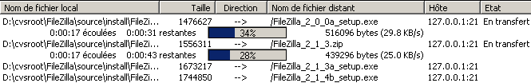

La File d'Attente de Transfert
Vue d'ensemble:
Chaque fois que vous voulez transférer un fichier avec FileZilla, le transfert sera mis en File d'Attente de Transfert. A chaque fois que vous voulez transférer plus d'un fichier, une file d'attente devient nécessaire. La file d'attente décide du prochain fichier qui sera transféré.

Chaque ligne de la liste représente un transfert de fichier différent. L'en-tête de colonne décrit la signification de chaque colonne.
Nom de fichier local est le fichier local qui sera transféré ou le fichier local qui sera remplacé par un fichier reçu.
Taille indique la taille totale du transfert.
Direction vous indique si le fichier sera envoyé (->) ou reçu (<-) Il vous indique aussi la priorité du transfert. Une simple flèche (-> ou <-) indique que le fichier attend d'être pris en charge pour un transfert ultérieur. Une double-flèche (->> ou <<-) attend pour des transferts qui ont été initialisés directement, les transferts de haute priorité. Les transferts de haute priorité seront pris en charge en premier. Quand vous ajoutez un nouveau fichier à la file d'attente, il prend place sous le dernier élément de même priorité.
Nom de fichier distant indique le fichier distant qui sera transféré ou le fichier distant qui sera remplacé pour une mise à jour.
Hôte est l'adresse du serveur concerné par le transfert.
État affiche certaines informations concernant les transferts. Les messages d'état sont: "En cours de transfert", "Erreur de transfert #x, "Nouvelle tentative ultérieure", "Transfert annulé", "Erreur transfert critique" ou "Trop de tentatives". Dans les trois dernières cas, vous devez réinitialiser l'état du transfert à l'aide du menu contextuel si vous voulez re-tenter le transfert du fichier ultérieurement.
Menu Contextuel
Faites un clic droit dans la file d'attente pour ouvrir le menu contextuel.
| Traitement de la file d'attente | - | Lance l'exécution de la file d'attente. |
| Supprimer de la file d'attente | - | Supprime un élément sélectionné de la file d'attente |
| Réinitialiser l'état | - | Réinitialise l'état d'un élément. Les anciens états devront être catalogués comme "Transfert annulé", "Erreur critique de transfert" ou "Trop de tentatives" |
| Monter | - | Déplace les éléments sélectionnés vers le haut. * |
| Descendre | - | Déplace les éléments sélectionnés vers le bas. * |
| En premier | - | Déplace les éléments sélectionnés vers le début de la file d'attente. * |
| En dernier | - | Déplace les éléments sélectionnés vers la fin de la file d'attente. * |
* Veuillez noter qu'un transfert 'basse priorité' ne pourra jamais se trouver avant un transfert 'haute priorité' et vice et versa.